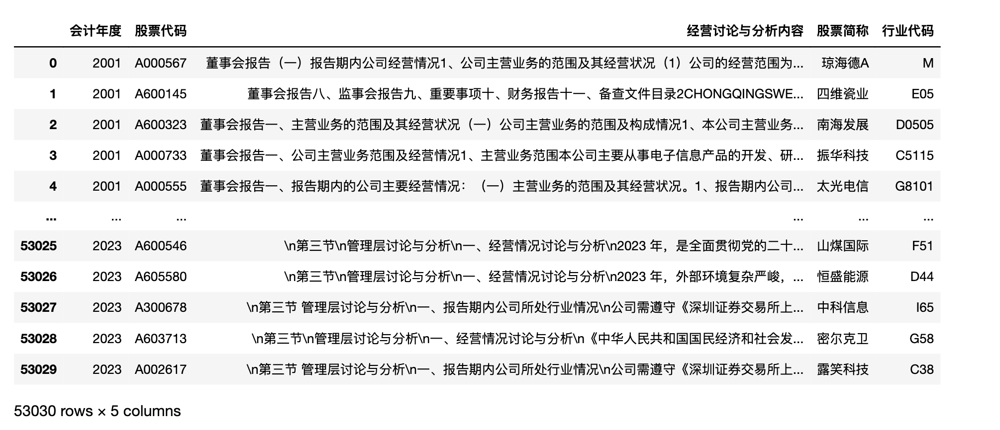
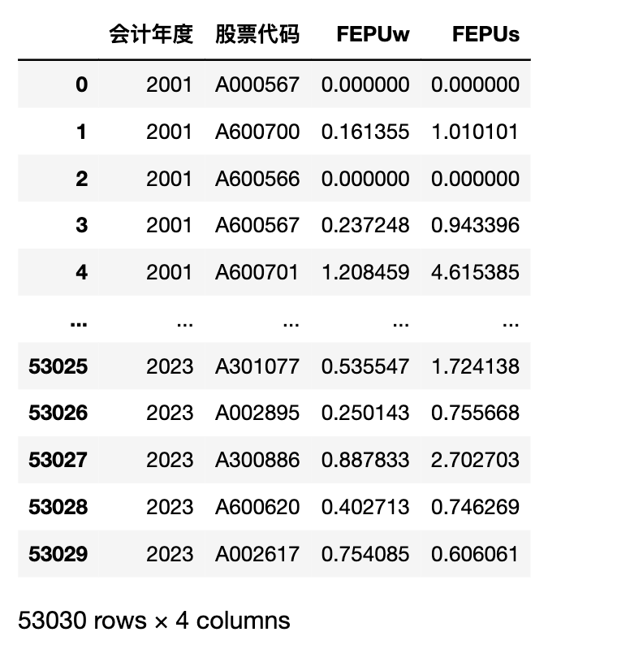
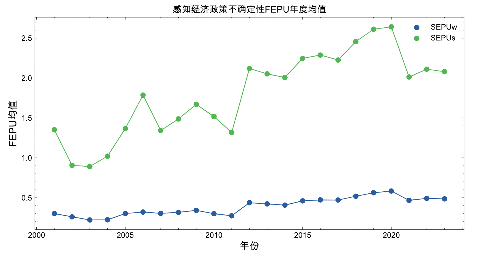

本文使用的缩写
- EPU 经济政策不确定性(Economic Policy Uncertainty, EPU)
- FEPU 企业不确定性感知(FEPU, Subjective perception of economic policy uncertainty)
一、背景
「经济政策不确定性(Economic Policy Uncertainty, EPU)」 通常是用来衡量经济中政策不确定性水平的一种度量方式。企业作为一个理性的经济主体， 需要根据未来的期望成本和收益进行决策 。政府的经济政策会在很大程度上影响企业的预期成本和收益 ， 如果经济政策频繁变化 ， 会给企业带来困扰 。现有文献经济政策不确定性测量思路大概有
- 股票市场隐含波动率VIX衡量宏观层面经济不确定性。
- 利用外生变量，并结合企业对这些外生变量的依赖程度衡量企业面临的不确定性 。如政治事件、能源价格、汇率波动、贸易协定签订。
- 利用新闻文本测量的经济不确定性。
但 经济政策不确定性指标(EPU)存在两个问题
- EPU是宏观指标， 同期所有企业的EPU有且仅有一个观测值。
- EPU默认所有企业是同质， 对经济政策不确定性的感知是相同的。
本推文参考聂辉华等(2020)内的算法, 实现利用 经营讨论与分析(MD&A)文本数据 测量企业「企业不确定性感知FEPU」(FEPU, Subjective perception of economic policy uncertainty) 。
二、EPU&FEPU
2.1 EPU
在复现「企业不确定性感知FEPU」前，我们先了解利用新闻数据测量 EPU 的算法，这样更容易理解 FEPU 的原理。参考Huang、Yun& Paul(2020)，大邓在前段时间分享了一个代码教程 代码 | 使用「新闻数据」计算 「经济政策不确定性」指数 。
新闻数据计算EPU的算法
Step-1. 选择了114家中国大陆的报纸，其中包括北京、上海、广州和天津等主要城市的报纸。
Step-2. 对于每家报纸，搜索包含以下三个关键词之一的文章：经济、不确定性和政策。这些关键词的中文和英文对照可以在论文的表格1中找到。
Step-3. 将每个月的文章数量按照满足第一个关键词的文章数量进行缩放。
Step-4. 将时间序列标准化，使其在2000年1月至2011年12月期间的标准差为1。 保证所有媒体计算得到的epu是可比的。
Step-5. 对十家报纸的月度序列进行简单平均，并将指标归一化，使其在2000年1月至2011年12月期间的平均值为100。
文献中算法内容长， 结构化不足， 理解起来需要一些脑力。 大邓换种描述方式
EPU_t = m/n
- m 时期 t 同时含经济Economic、政策Policy、不确定Uncertainty三类词的新闻条数m
- n 时期 t 总的新闻条数n
2.2 FEPU
理解了 EPU， 就能类比理解「企业感知经济政策不确定性FEPU」的算法。
| 算法 | 数据 | 层次 | n | m |
|---|---|---|---|---|
| 经济政策不确定性EPU | 新闻媒体文本 | 新闻条数 | 时期t新闻总条数n | 时期t同时存在E、P、U三类词的新闻条数m |
| 感知经济政策不确定性FEPU(word) | 管理层讨论与分析(md&a) | 词语数 | 将时期t的企业i的 md&a 文本词语个数n。 | 1. 将md&a分句，得到很多句子。 2. 同时含EP、U两类词的句子中， 统计这些句子中EP、U的词语出现次数之和m (聂2020文献中只有两类，其中E、P合并为EP) |
| 感知经济政策不确定性FEPU(sentence) | 管理层讨论与分析(md&a) | 句子数 | 将时期t的企业i的 md&a 文本进行分句，得到句子个数n | 1. 将md&a分句，得到很多句子。 2. 同时含EP、U两类词的句子中， 统计这类句子个数m (聂2020文献中只有两类，其中E、P合并为EP) |
三、 准备cntext
EPU 和 FEPU 于今日刚刚封装到 cntext2.1.1 中， 再计算这两个指数， 就变得容易多了。
3.1 安装cntext
我使用的自己 未公开 的cntext 2.1.1 版本， Bug频出，等调整好了再公开。
将 cntext-2.1.1-py3-none-any.whl 放置于桌面，打开 cmd (苹果电脑打开terminal)， 输入cd desktop
cd desktop
之后在 cmd (苹果电脑打开terminal) 中使用 pip3 安装
pip3 install pdfdocx
pip3 install distinctiveness
pip3 install pandarallel
pip3 install cntext-2.1.1-py3-none-any.whl
文末有 cntext-2.1.1-py3-none-any.whl 获取方式
3.2 内置词典
| 内置文件 | 词典 | 参考文献文献 |
|---|---|---|
| zh_common_EPU.yaml | 经济E、政策P、不确定U | Huang, Yun, and Paul Luk（2020） |
| zh_common_FEPU.yaml | 经济政策EP、不确定性U | 聂辉华, 阮睿&沈吉（2020） |
3.1 查看内置词典
import cntext as ct
print(ct.__version__)
ct.get_dict_list()
Run
2.1.1
['zh_common_NTUSD.yaml',
'zh_common_DUTIR.yaml',
'enzh_common_StopWords.yaml',
'en_valence_Concreteness.yaml',
'en_common_LoughranMcDonald.yaml',
'zh_common_FinanceSenti.yaml',
'zh_common_TsinghuaPraiseDegrade.yaml',
'zh_common_FEPU.yaml', 聂辉华, 阮睿&沈吉（2020）
'en_common_ANEW.yaml',
'en_common_NRC.yaml',
'zh_valence_ChineseEmoBank.yaml',
'zh_valence_SixSemanticDimensionDatabase.yaml',
'zh_common_FinacialFormalUnformal.yaml',
'zh_common_LoughranMcDonald.yaml',
'enzh_common_AdvConj.yaml',
'en_common_SentiWS.yaml',
'zh_common_Digitalization.yaml',
'en_common_LSD2015.yaml',
'zh_common_HowNet.yaml',
'zh_common_EPU.yaml'] #Huang, Yun, and Paul Luk（2020）
3.1.2 导入词典
import cntext as ct
FEPU_infos = ct.read_yaml_dict('zh_common_FEPU.yaml')
print(FEPU_infos)
Run
{'Name': '中文经济政策不确定性词典',
'Desc': '中文经济政策不确定性词典, 含经济政策EconomicPolicy、不确定性Uncertainty两个词表',
'Refer': '聂辉华, 阮睿, 沈吉. 企业不确定性感知、投资决策和金融资产配置[J]. 世界经济, 2020, 43 (06): 77-98.',
'Category': ['经济政策', '不确定'],
'Dictionary':
{'经济政策': ['市政', '政策', '货币政策', '政策鼓励', '国家', '扩内需', '保增长', '促发展', '产业发展', '法律', '法规', '行业政策', '产业政策', '宏观政策', '国民经济', '有关部门', '产业结构调整', '产业结构', '当地政府', '政府', '经济政策', '经济走势', '所得税', '税收减免', '刺激政策', '限贷令', '限购令', '保障房', '宏观调控', '产业发展', '证监会', '国家政策', '政治', '军事', '政策环境', '宏观', '政府补助政策', '调控政策', '税收政策', '政策扶持'],
'不确定': ['风险', '经营风险', '市场风险', '信用风险', '不确定', '波动', '变化', '改变', '徘徊', '不稳', '不稳定', '不寻常', '错综复杂', '非常复杂', '纷繁复杂', '纷纭复杂', '十分复杂', '变得复杂', '风云突变', '矛盾突出', '突变', '复杂多变', '诡谲多变', '阵痛', '过渡', '问责', '整顿', '危险', '动荡', '多变性', '震荡', '难以确定', '难以预测', '难以语料', '难以琢磨', '难以捉摸', '接受考验', '混乱', '时而', '随机']}
}
3.3 内置函数
ct.epu(df, freq=‘Y’,e_pattern='', p_pattern='', u_pattern='')
- df 新闻DataFrame； DataFrame必须含date和text两个字段；每行一条记录，含所有时期所有的新闻。
- freq 字符串；决定EPU的时间粒度， 年Y、月M、天D， 默认freq=‘Y’
- e_pattern 字符串；经济类词典，用
|间隔词语，形如 e_pattern = ‘经济|金融’ - p_pattern 字符串；政策词典，用
|间隔词语，形如 p_pattern = ‘政策|治理|行政’ - u_pattern 字符串；不确定性词典，用
|间隔词语，形如 u_pattern = ‘风险|危机|难以预测’
返回epu时间序列数据，格式为DataFrame
ct.fepu(text, ep_pattern='', u_pattern='')
- text ；某时期t某企业i的管理层讨论与分析md&a文本
- ep_pattern 字符串；经济政策类词典，用
|间隔词语，形如 ep_pattern = ‘经济|金融|政策|治理|行政’ - u_pattern 字符串；不确定性词典，用
|间隔词语，形如 u_pattern = ‘风险|危机|难以预测’
四、测量FEPU
4.1 读取数据
- mda01-22.csv.gz 管理层讨论与分析2001-2022文本数据
- 行业代码00-22.xlsx 含股票名称、股票代码、行业等字段。
import pandas as pd
df = pd.read_csv('mda01-22.csv.gz', compression='gzip')
df.columns = ['会计年度', '股票代码', '经营讨论与分析内容']
#上市公司行业信息
ind_info_df = pd.read_excel('行业代码00-22.xlsx')
#合并数据
df = pd.merge(df, ind_info_df, on=['股票代码', '会计年度'], how='inner')
#剔除ST和金融类企业
df = df[(-df['股票简称'].str.contains('ST')) & (-df['行业代码'].str.contains('J'))]
df

4.2 批量计算FEPU
选中字段 「经营讨论与分析内容」， 对该字段 .apply 运行函数 ct.fepu ，得到企业感知经济不确定性风险FEPU(含词语和句子两个FEPU)
%%time
#常规速度代码
#import cntext as ct
#FEPU_df = df['经营讨论与分析内容'].apply(ct.FEPU)
#res_df = pd.concat([df[['会计年度', '股票代码']], FEPU_df], axis=1)
#res_df.to_csv('result.csv', index=False)
#res_df
#加速版代码
import cntext as ct
from pandarallel import pandarallel
pandarallel.initialize()
fepu_df = df['经营讨论与分析内容'].parallel_apply(ct.fepu)
res_df = pd.concat([df[['会计年度', '股票代码']], fepu_df], axis=1)
res_df.to_csv('result.csv', index=False)
res_df
Run
CPU times: user 1.35 s, sys: 1.2 s, total: 2.54 s
Wall time: 4min 29s

`
4.3 可视化
根据 FEPUw 和 FEPUs 的年度均值， 绘制2001-2022期间的经济政策不确定性变化折线图
import matplotlib.pyplot as plt
import matplotlib
import scienceplots
import platform
import matplotlib_inline
matplotlib_inline.backend_inline.set_matplotlib_formats('png', 'svg')
plt.style.use(['science', 'no-latex', 'cjk-sc-font'])
system = platform.system() # 获取操作系统类型
if system == 'Windows':
font = {'family': 'SimHei'}
elif system == 'Darwin':
font = {'family': 'Arial Unicode MS'}
else:
font = {'family': 'sans-serif'}
matplotlib.rc('font', **font) # 设置全局字体
years = range(2001, 2023)
FEPUw_s = []
FEPUs_s = []
for year, year_df in res_df.groupby('会计年度'):
FEPUw_s.append(year_df['FEPUw'].mean())
FEPUs_s.append(year_df['FEPUs'].mean())
plt.figure(figsize=(10, 5))
plt.plot(years, FEPUw_s)
plt.plot(years, FEPUs_s)
plt.scatter(years, FEPUw_s, label='SEPUw')
plt.scatter(years, FEPUs_s, label='SEPUs')
plt.title('感知经济政策不确定性FEPU年度均值', size=12)
plt.xlabel('年份', size=13)
plt.ylabel('FEPU均值', size=13)
plt.legend()
plt.show()

五、参考文献
[1]聂辉华, 阮睿, 沈吉. 企业不确定性感知、投资决策和金融资产配置[J]. 世界经济, 2020, 43 (06): 77-98.
[2]Li, Jing, Huihua Nie, Rui Ruan, and Xinyi Shen. "Subjective perception of economic policy uncertainty and corporate social responsibility: Evidence from China." International Review of Financial Analysis 91 (2024): 103022.
[3]Huang, Yun, and Paul Luk. "Measuring economic policy uncertainty in China." China Economic Review 59 (2020): 10136
六、获取资料
内容原创不易，
- 100元
- mda01-22.csv.gz
- A01-22.csv.gz
- 100元 cntext-2.1.1-py3-none-any.whl
- 200元
- mda01-22.csv.gz
- A01-22.csv.gz
- cntext-2.1.1-py3-none-any.whl
加微信 372335839， 备注「姓名-学校-专业」。